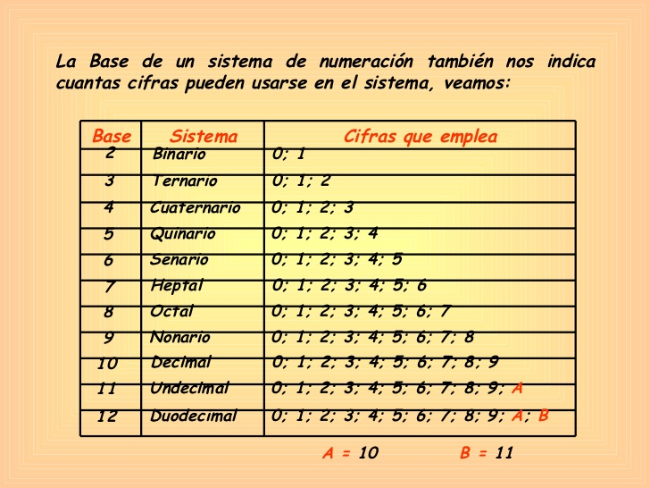

Un sistema de numeración es un conjunto de símbolos y reglas de generación que permiten construir todos los números válidos en el sistema.
Cualquier sistema consta fundamentalmente de una serie de elementos que lo conforman, una serie de reglas que permite establecer operaciones y relaciones entre tales elementos. Por ello, puede decirse que un sistema de numeración es el conjunto de elementos (símbolos o números), operaciones y relaciones que por intermedio de reglas propias permite establecer el papel de tales relaciones y operaciones.
Los sistemas de numeración pueden clasificarse en tres grupos que son:
=> S. Numeración No-posicionales.
=> S. Numeración Semi-posicionales.
=> S. Numeración posicionales.
En los sistemas no-posicionales los dígitos tienen el valor del símbolo utilizado, que no depende de la posición (columna) que ocupan en el número.
Por ejemplo, el sistema de numeración egipcio es no posicional, en cambio el babilónico es posicional. Las lenguas naturales poseen sistemas de numeración posicionales basados en base 10 ó 20, a veces con subsistemas de cinco elementos. Además, en algunas pocas lenguas los numerales básicos a partir de cuatro tienen nombres basados en numerales más pequeños.

Un sistema de numeración está definido por la elección arbitraria de una base de numeración (esta base es igual al número de símbolos, llamados cifras, que se utilizarán para representar los números) y por ciertas reglas de posición. La base a elegida debe ser un número natural superior a 1; una vez fijada la base, es necesario elegir a signos diferentes y a nombres diferentes para representar y nombrar los primeros números inferiores a a.
En el caso en que a=10 se trata del sistema de numeración decimal, sistema utilizado de manera general, y cuyo origen es casi con seguridad el número de dedos de las manos. Los símbolos utilizados son, en este caso, las cifras 0, 1, 2, 3, 4, 5, 6, 7, 8 y 9.
En el caso en que a=2 se trata del sistema de numeración binaria, sistema utilizado por razones tecnológicas en las máquinas de cálculo, en particular en los ordenadores. Los símbolos utilizados son entonces las cifras 0 y 1. Las calculadoras utilizan también el sistema de base 8, o sistema octal
La representación escrita de los números naturales se fundamenta en el hecho de que todo número natural se puede expresar de forma única como combinación lineal de potencias de la base elegida.